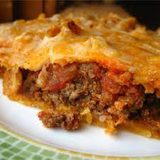

Taco Pie

Description
It'a quick, easy meal that is very filling. Some people
will also top it with regular taco toppings, i.e. lettuce,
tomatoes, black olives, etc. It also is great as leftovers
for lunches! Serve with taco sauce.
Ingredients
- 1 package refrigerated crescent rolls
- 1 pound ground beef
- 1 package taco seasoning mix
- 1 container sour cream
- 8 ounces shredded Mexican-style cheese blend
- 1 bag tortilla chips, chrushed
Steps
- Preheat oven to 350 degrees F (175 degrees C).
- Lay crescent dough flat on the bottom of a square cake pan and bake according to package directions.
- Meanwhile, brown the ground beef in a large skillet over medium high heat.
Add the taco seasoning and stir together well. When dough is done, remove
from oven and place meat mixture on top, then layer with sour cream and cheese,
and then top off with the crushed nacho chips.
- Return to oven and bake at 350 degrees F (175 degrees C) for 10 minutes, or until cheese has melted.